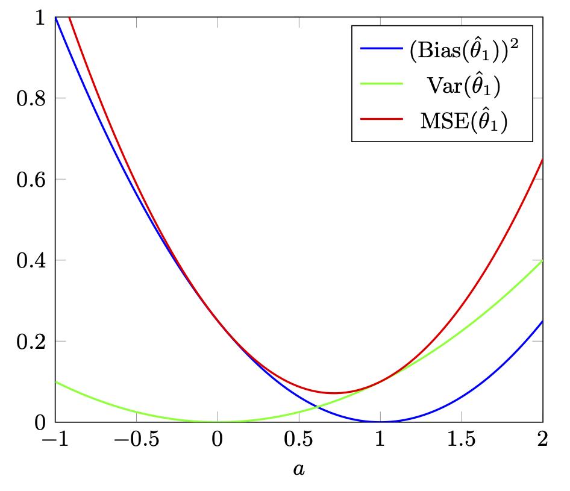

|  |  |
|

ECE, CS 450(1/2)/6501: Statistical Learning and Graphical Models (Fall 2021)
Welcome to statistical learning and graphical models! This course is focused on the foundations of estimation theory, statistical learning, probabilistic graphical models, and relevant computational algorithms. The course maintains a probabilistic view of these topics, aiming to represent complex systems via probabilistic models and using these models to draw conclusions about hidden values from observation and data.
We will start with the fundamentals of inference, including frequentist and Bayesian estimation methods, and explore these further in the context of regression and classification problems. We will then turn our attention to probabilistic graphical models, which provide a flexible mechanism for representing statistical relationships between variables and processes. Finally, we will study computational methods for inference and learning, enabling us to analyze, interpret, and explain patterns in complex data.
Pre-requisites:
- Fluency in basic probability (e.g., APMA 3100) is needed for the course. You should be comfortable with 70-80% of Chapter 0. You can also refer to these pages I developed for a different course to review probability, although these don’t cover everything we’ll need:
- Familiarity with linear algebra.
- The programming exercises are based on Python.
Note to Undergraduate students: You do not need instructor permission to enroll in this course. But fluency in probability is an important prereq and if your foundation in probability is not strong, you will not be able to fully benefit from the course.
Tentative Grading Scheme: HW/Labs = 50%; Quizzes/In-class activities = 20%; Midterm Exam = 20%; Project = 10%
Course Notes: The notes can be found here and are continuously updated. For pre-reading, quizzes, exams, etc., download the latest version when announcements are made.
The individual chapter notes below may be slightly more up to date than the link above:
- Review of Probability
- Probability, Inference, and Learning
- Frequentist Parameter Estimation
- Bayesian Parameter Estimation
- Multivariate random variables
- Linear Regression
- Linear Classification
- Expectation-Maximization
- Basics of Graphical Models
- Independence in Graphical Models
- Parameter Estimation in Graphical Models
- Inference in Graphical Models
- Inference in Hidden Markov Models
- Factor Graphs and Sum/Max-product Algorithms
- Markov Chains
- Sampling Methods
- Appendix
Course Schedule: The schedule below is tentative. We will, almost surely, deviate from it.
Notes (from previous offering):
- Review of Probability
- Probability, Inference, and Learning
- Frequentist Parameter Estimation (partial *)
- Bayesian Parameter Estimation
- Multivariate random variables
- Linear Regression
- Linear Classification
- Expectation-Maximization *
- Basics of Graphical Models
- Independence in Graphical Models
- Parameter Estimation in Graphical Models
- Inference in Graphical Models
- Inference in Hidden Markov Models
- Factor Graphs and Sum/Max-product Algorithms **
- Markov Chains
- Sampling Methods
- Appendix
*: material only for graduate students. **: optional material for completeness (not part of the course)
Other Material:
- Notes (OneNote)
- Probability Review Test
- Lab 0: Probability and Python (IPython Notebook)
- Assignment 1
- Lab 1: Graphical Models
- Assignment 2
- Lab 2: Frequentist and Bayesian Estimation
- Assignment 3
- Lab 3: Regression and SGD, data: BoxOffice2017.csv
- Miniproject
- Lab 4: Classification
- Lab 5: EM
- Assignment 4
- Lab 6: HMM
- Assignment 5
- Lab 7: MCMC